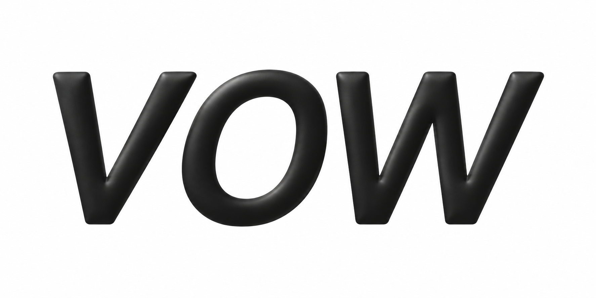

A触れたくなる練習道具 SOFT BLACK白 × 黒 × 柔らかな立体 ENGLISH, IN YOUR WORDS.Make ityour own.知っている英語を、自分の言葉に。場面を思い浮かべて、ひとこと声に出す。ひとこと試す ↗TODAY’S SITUATION提案を少し考えてから返事したい。例文を見るLet me sleep on it.一晩考えさせて。思い出す → 声に出す → 確かめる01 / 03 名前そのものを、手に取りたくなる物に。Fuse の白い余白と黒い量感を、Izzy 全体へ。浅い厚みと柔らかな光で、落ち着きと遊び心を両立する。詰める点：小さいアイコンでの太さと余白。立体版の字形は最終調整が必要。参照：Fuse · (Not Boring) Habits
B自分だけの練習帳 PAPER & INK生成り × 深緑 × 文字組 A PERSONAL PRACTICEA little practice, every day.Make ityour own.知っている英語を、自分の言葉に。場面を思い浮かべて、ひとこと声に出す。ひとこと試す ↗01 — 今日のひとこと提案を少し考えてから返事したい。例文を見るLet me sleep on it.一晩考えさせて。思い出す → 声に出す → 確かめる01 / 03 英語を、自分の中に少しずつ残していく。布や印刷物の落ち着きを、余白、罫線、章立てへ。例文そのものが主役になる、私的な練習帳。詰める点：静かさと識別性の両立。紙の装飾を増やすより、文章と組版を磨く。参照：Starch Living / atla · ブランド探索
C言葉を組み立てるスタジオ COLOUR & COMPOSITIONイエロー × 紫 × 重なる面 WORDS INTO LIFE.Make ityour own.知っている英語を、自分の言葉に。場面を思い浮かべて、ひとこと声に出す。ひとこと試す ↗SCENE → YOUR WORDS01提案を少し考えてから返事したい。例文を見るLet me sleep on it.一晩考えさせて。思い出す → 声に出す → 確かめる01 / 03 言い方を試して、自分の表現にしていく。場面と返答を、色の違う面として組み合わせる。明るさを持たせながら、紫の文字と限定した色数で整える。詰める点：楽しくても幼く見えないこと。色は役割に結びつけ、例文の周囲は静かに。参照：Ditto · Dessn